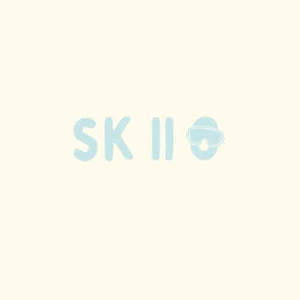

Trade Mark Journal No.2025/018 2 May 2025
UK00004188263 13 April 2025 (9,18,25,28)

- Class 9
- Ski goggles; Ski helmets; Ski glasses; Snowboard helmets; Water ski safety vests; Snow goggles; Motorcycle helmets; Helmet cameras; Bicycle helmets; Riding helmets; Helmets (Riding -); Visors for helmets; Headgear being protective helmets; Skateboard helmets; Helmets for motorcyclists; Safety helmets; Protective helmets; Helmets (Protective -); Chin straps for football helmets; Motorcycle goggles; Diving helmets; Crash helmets; Welding helmets; Hockey helmets; Helmet camera mounts; Football helmets; Helmets for use in sports; Sports helmets; Protective helmets for motor cyclists; Protective helmets for motorists; Protection helmets for sports; Boxing helmets; Helmets for bicycles; Crash helmets for cyclists; Drivers helmets; Protective helmets for sports; Protective helmets for use in sports; Helmets (Protective -) for sports; Sports (Protective helmets for -); Protective sports helmets; Catchers' helmets; Solderers' helmets; Safety headgear; Baseball batting helmets; Goggles; Ice hockey helmets; Protective helmets for children; Safety goggles; Helmet communications systems; Protective face-shields for protective helmets; Protective headgear; Helmets for American football; Protective goggles; Anti-fogging safety goggles; Dust protective goggles; Scuba goggles; Dust goggles; Goggles for use in sports; Goggles for sports; Sports goggles; Sports (Goggles for -); Diving goggles; Camera goggles; Welding goggles; Hi-viz safety clothing; Headgear for protection against accident; Sport bags adapted [shaped] to contain protective helmets; Safety headwear; Protective visors; Visors [protective]; Swim goggles; VR goggles; Riding hats; Visors for the protection of welders; Protective headgear for the prevention of accident or injury; Goggles for scuba diving; Divers' goggles; Headgear for protection against injury; Lenses for protective face shields; Nose pads for eyewear; Articles of protective clothing for wear by motorcyclists for protection against accident or injury; Sunglass nose pads; Neural helmets, not for medical purposes; Swimming goggles; Protective clothing [body armour]; Straps for sunglasses; Sports eyewear; Eyewear; Prescription eyewear; Protective eyewear; Corrective eyewear; Eyewear pouches; Eyewear cases; Cases for eyewear; Eyeglasses; Fashion eyeglasses; Sunglass lenses; Fashion sunglasses; Eyeglasses for sports; Sports training eyeglasses; Glasses for sports; Flame-retardant balaclavas; Bullet-proof vests; Bullet-proof waistcoats; Swimming face masks; Bulletproof clothing; Bullet-proof clothing; Waistcoats (Bullet-proof -); Bullet-proof waistcoats [vests (Am.)]; Thermoregulators.
- Class 18
- Bags; Tote bags; Luggage bags; Duffle bags; Duffel bags; Carry-on bags; Toiletry bags; Bags for clothes; Drawstring bags; Carry-all bags; Belt bags and hip bags; Nose bags [feed bags]; Bags (Nose -) [feed bags]; Carrying bags; Grocery tote bags; Cross-body bags; Bags for umbrellas; Diaper bags; Luggage, bags, wallets and other carriers; Crossbody bags; Cloth bags; Bucket bags; Leather bags; Sling bags; Nappy bags; Canvas bags; Belt bags; Duffel bags for travel; Shoe bags; Clutch bags; Wheeled bags; Kit bags; Travel bags; Bags for travel; Messenger bags; Souvenir bags; Leather bags and wallets; Garment bags; Shoulder bags; Toilet bags; Make-up bags; Cosmetic bags; Waterproof bags; Reusable shopping bags; Makeup bags; Umbrella bags; Camping bags; Towelling bags; Bags for campers; Courier bags; Roll bags; Gym bags; Bags for carrying pets; Hand bags; Knitted bags; Travelling bags; Bags [envelopes, pouches] of leather, for packaging; Bags [envelopes, pouches] for packaging of leather; Bags [envelopes, pouches] of leather for packaging; Attaché bags; Cabin bags; Flight bags; Traveling bags; Overnight bags; Beach bags; Bags for climbers; Boot bags; Mesh shopping bags; Mesh bags for shopping; Leather shopping bags; Canvas shopping bags; Knitting bags; Hiking bags; Bum bags; Frames for bags [structural parts of bags]; Wash bags for carrying toiletries; Roller bags; Nose bags; Suit bags; Hunting bags; Baby carrying bags; Feed bags; Waist bags; Gladstone bags; Leggings for animals; Carriers for suits, shirts and dresses; Carriers for suits, for shirts and for dresses.
- Class 25
- Ski boots; Boots (Ski -); Ski jackets; Ski pants; Ski balaclavas; Ski trousers; Ski gloves; Ski wear; Ski suits; Ski hats; Clothing for skiing; After ski boots; Ski boot bags; Skiing shoes; Ski and snowboard shoes and parts thereof; Ski suits for competition; Snowboard mittens; Snowboard jackets; Snowboard boots; Snowboard trousers; Snowboard shoes; Snowboard gloves; Footwear for snowboarding; Apres-ski shoes; Après-ski boots; Snow boarding suits; Salopettes; Mountaineering boots; Snow pants; Climbing boots [mountaineering boots]; Snow boots; Mountaineering shoes; Mountaineering gloves; Sports headgear [other than helmets]; Headgear; Motorcycle gloves; Headgear for wear; Cap visors; Riding gloves; Riding Gloves; Visors [headwear]; Visors being headwear; Motorcycle riding suits; Thermal headgear; Motorcycle jackets; Motorcyclist boots; Visors [clothing]; Cycling Gloves; Caps with visors; Gloves for cyclists; Visors; Riding jackets; Skull caps; Sun visors [headwear]; Head wear; Clothing for horse-riding [other than riding hats]; Camouflage gloves; Boots for motorcycling; Gloves; Fingerless gloves; Fingerless gloves as clothing; Gloves [clothing]; Gloves as clothing; Knitted gloves; Gloves for apparel; Winter gloves; Golf clothing, other than gloves; Driving gloves; Warm gloves for touchscreen devices; Mitts [clothing]; Thermal gloves for touchscreen devices; Sports clothing [other than golf gloves]; Mittens; Gloves including those made of skin, hide or fur; Coveralls; Handwarmers [clothing]; Protective metal members for shoes and boots; Footwear for sport; Footwear for use in sport; Boots for sport; Boots for sports; Footwear for sports; Sports footwear; Climbing footwear; Skating outfits; Clothes for sport; Clothing for sports; Sports clothing; Hiking boots; Sports pants; Clothing for gymnastics; Sport shoes; Climbing boots; Footwear not for sports; Sport stockings; Riding boots; Sports socks; Figure skating clothing; Clothes for sports; Headshawls; Lumberjackets; Scarves; Snoods [scarves]; Cashmere scarves; Scarfs; Silk scarves; Head scarves; Neck scarves; Shawls and headscarves; Shoulder scarves; Shawls; Neck scarves [mufflers]; Mufflers [neck scarves]; Mufflers as neck scarves; Shawls and stoles; Neck scarfs [mufflers]; Sweaters; Neck tube scarves; Headbands [clothing]; Headbands for clothing; Cardigans; Kerchiefs [clothing]; Beanie hats; Cowls [clothing]; Beanies; Headbands; Knit jackets; Toques [hats]; Hats; Knitted clothing; Cashmere clothing; Jumpers [sweaters]; Bandanas [neckerchiefs]; Turtleneck sweaters; Wearable blankets in the nature of blankets with sleeves; Kerchiefs; Knit shirts; Capelets; Quilted jackets [clothing]; Woolly hats; Headscarves; Fur hats; Bandanas; Hats (Paper -) [clothing]; Paper hats [clothing]; Headscarfs; Paper hats for use as clothing items; Veils [clothing]; Sweatshirts; Ushankas [fur hats]; Bobble hats; Caftans; Mitres [hats]; Knitwear [clothing]; Silk clothing; Bandannas; Turbans; Miters [hats]; Shawls [from tricot only]; Fascinator hats; V-neck sweaters; Foulards [clothing articles]; Polo sweaters; Fashion hats; Aprons [clothing]; Woven shirts; Waistcoats [vests]; Jackets [clothing]; Cloche hats; Blouses; Knitted tops; Kaftans; Capes (clothing); Party hats [clothing]; Knitted underwear; Headdresses [veils]; Neckties; Turtleneck shirts; Woolen clothing; Hooded sweatshirts; Woollen socks; Turtlenecks; Fake fur hats; Knitted caps; Fur coats and jackets; Knitwear; Fabric belts [clothing]; Embroidered clothing; Fur stoles; Stoles (Fur -); Fleece jackets; Quilted vests; Collars for dresses; Collars [clothing]; Fur jackets; Wraps [clothing]; Jackets; Windproof jackets; Blouson jackets; Sleeved jackets; Denim jackets; Leather jackets; Rainproof jackets; Wind-resistant jackets; Waterproof jackets; Sleeveless jackets; Sheepskin jackets; Men's and women's jackets, coats, trousers, vests; Suede jackets; Bomber jackets; Weatherproof jackets; Padded jackets; Camouflage jackets; Rain jackets; Reversible jackets; Hunting jackets; Shell jackets; Fishing jackets; Heavy jackets; Sweat jackets; Down jackets; Jackets being sports clothing; Sports jackets; Warm-up jackets; Wind jackets; Jackets (Stuff -) [clothing]; Stuff jackets [clothing]; Casual jackets; Stuff jackets; Safari jackets; Bed jackets; Dinner jackets; Light-reflecting jackets; Smoking jackets; Fishermen's jackets; Track jackets; Long jackets; Donkey jackets; Polar fleece jackets; Parkas; Anoraks [parkas]; Jacket liners; Overcoats; Wind resistant jackets; Vests; Fleece vests; Gilets; Wind-resistant vests; Oilskins [clothing]; Windproof clothing; Corduroy shirts; Blazers; Outerwear; Raincoats; Coats of denim; Denim coats; Hoods [clothing]; Leather waistcoats; Windcheaters; Leather belts [clothing]; Camouflage vests; Waistcoats; Shorts [clothing]; Shirts for suits; Jerseys [clothing]; Waterproof trousers; Corduroy trousers; Leather coats; Chaps (clothing); Jumpsuits; Duffle coats; Belts [clothing]; Belts for clothing; Overshirts; Down vests; Trousers of leather; Duffel coats; Corduroy pants; Bottoms [clothing]; Korean outer jackets worn over basic garment [Magoja]; Wind vests; Rainproof clothing; Hoodies; Trousers; Sports vests; Overtrousers; Cagoules; Leggings [trousers]; Waterproof pants; Baselayer bottoms; Snowsuits; Woollen tights; Weatherproof pants; Trousers shorts; Bib tights; Trousers for sweating; Rainwear; Waterproof boots; Rain trousers; Nappy pants [clothing]; Gaiters; Windshirts; Dungarees; Tracksuit bottoms; Tights; Riding trousers; Waterproof suits for motorcyclists; Fleece shorts; Socks; Tennis socks; Toe socks; Slipper socks; Thermal socks; Socks and stockings; Trouser socks; Yoga socks; Ankle socks; Men's socks; Sweat-absorbent socks; Anti-perspirant socks; Footless socks; Inner socks for footwear; Water socks; Non-slip socks; Socks for men; Bed socks; Men's dress socks; Pop socks; Anklets [socks]; Sock suspenders; Hiking shoes; American football socks; Knee warmers [clothing]; Shoes for foot volleyball; Foot volleyball shoes; Insoles [for shoes and boots]; Insoles for shoes and boots; Fishing boots; Valenki [felted boots]; Bootees (woollen baby shoes); Trekking boots; Winter boots; Moisture-wicking sports pants; Soccer boots; Winter coats; Sailing wet weather clothing; Snow suits; Rain coats; Weather resistant outer clothing; Evening coats; Morning coats; Rain boots; Wind coats; Rain wear; Desert boots; Sport coats; Balaclavas; Face mask [clothing] ; Muffs [clothing]; Ear muffs [clothing]; Mock turtleneck sweaters; Greatcoats; Ear warmers being clothes; Hoods; Hooded pullovers; Earmuffs; Turtleneck pullovers; Fleece pullovers; Hooded sweat shirts; Hooded bathrobes; Neck gaiters; Pyjamas [from tricot only]; Camouflage pants; Hooded tops; Arm warmers [clothing]; Underwear (Anti-sweat -); Anti-sweat underwear; Pyjamas; Gaiter straps; Straps (Gaiter -); Weatherproof clothing; Maternity leggings; Leggings [leg warmers]; Denim pants; Capri pants; Dress pants; Pants; Footless tights; Yoga pants; Jeans; Maternity pants; Leather pants; Culottes; Sweatpants; Denim jeans; Maternity shorts; Bodysuits; Athletic tights; Culotte skirts; Gussets for tights [parts of clothing]; Shorts; Booties; Legwarmers; Bib shorts; Thong sandals; Chino pants; Jogging pants; Stretch pants; Turtleneck tops; Bralettes; Dress shirts; Playsuits [clothing]; Skirt suits; Skorts; Pajama bottoms; Yoga shirts; Jogging bottoms [clothing]; Leather dresses; Romper suits; Yoga bottoms; Sweatshorts; Leotards; Babies' pants [underwear]; Sleeveless pullovers; Long-sleeved shirts; Dress shoes; Babies' pants [clothing]; Lace boots; Denims [clothing]; Bandeaux [clothing]; Gym shorts; Tracksuit tops; Baselayer tops; Gymwear; Baby pants; Warm-up pants; Vest tops; Sweat pants; Stockings (Sweat-absorbent -); Sweat-absorbent stockings; Stockings [sweat-absorbent]; Tank-tops; Horse-riding pants; Jogging outfits; Cycling pants; Tops [clothing]; Yoga tops; Boy shorts [underwear]; Fleece tops; Tunics; Yoga shoes; Blue jeans; Sandals; Men's sandals; Lounge pants; Short-sleeved T-shirts; Cargo pants; Sleeveless jerseys; Skirts; Sweat-absorbent underwear; Maternity shirts; Pinafore dresses; Jumper dresses; Gussets for leotards [parts of clothing]; Casual trousers; Camisoles; Sundresses; Pirate pants; Maternity dresses; Sweat shorts; Men's underwear; Short-sleeve shirts; Underwear; Jockstraps [underwear]; Sweat-absorbent underclothing [underwear]; Trunks [underwear]; Maternity underwear; Disposable underwear; Undergarments; Underwear for women; Thermal underwear; Underpants; Functional underwear; Underclothes; Women's underwear; Long underwear; Gussets for underwear [parts of clothing]; Teddies [undergarments]; Panties; Ladies' underwear; Lingerie; Slips [undergarments]; Knickers; Clothes; Underpants for babies; G-strings; Thongs; Underclothing; Maternity lingerie; Teddies [underclothing]; Trunks being clothing; Clothing; Pajamas; Undershirts; Underclothing (Anti-sweat -); Anti-sweat underclothing; Corsets [underclothing]; Sweat-absorbent underclothing; Bodices [lingerie]; Latex clothing; Braces for clothing [suspenders]; Corsets [clothing, foundation garments]; Bra straps [parts of clothing]; Drawers [clothing]; Drawers as clothing; Braces [suspenders] for clothing / Suspenders [braces] for clothing; Slips [underclothing]; Swimsuits; Babies' undergarments; Hosiery; Slips [clothing]; Beach clothes; Nipple pasties being underclothing; Sleep pants; Maillots [hosiery]; Bras; Pantyhose; Womens' undergarments; Briefs [underwear]; Waterproof clothing; Neckerchieves; Half-boots; Pelerines; Earbands; Babies' outerclothing; Headsquares; Tailleurs; Gymshoes; Ladies' outerclothing; Cravates; Chemisettes; Wind-jackets; Over-trousers; Mankinis; Ruanas; Camiknickers; Sweatjackets.
- Class 28
- Ski bindings; Alpine skis; Ski poles for roller skis; Ski poles; Ski sticks for roller skis; Ski boards; Ski brakes; Skis; Ski bags; Ski sticks; Bindings for alpine skis; Ski edges; Ski covers; Ski skins; Ski cases; Covers for ski bindings; Roller skis; Surf skis; Snowboard bindings; Bindings for water skis; Ski bindings and parts therefor; Waterski bindings; Snowboard decks; Edges of skis; Skis (Edges of -); Snow sleds for recreational use; Covers (Shaped -) for ski sticks; Bindings for snowboards; Sleds for use in downhill amusement rides; Sole coverings for skis; Skis (Sole coverings for -); Coverings for skis (Sole -); Snowboards; Toboggans; Sleds [recreational equipment]; Mountain boards; Bags adapted for skis; Snowshoes; Waterskis; Covers (Shaped -) for skis; Snow boards; Snow shoes; Sleds [sports articles]; Sleds being sports articles; Athletic protective knee pads for skateboarding; Protectors for the knees for use when skateboarding [sports articles]; Skateboards; Athletic protective elbow pads for skateboarding; Skateboard paddles; Wakeboards; Chest protectors adapted for playing the sport of taekwondo; Wakeskates; Water-skiing gloves; Athletic protective knee pads for skating; Protective face masks for use in the sport of fencing.
Skiio LTD